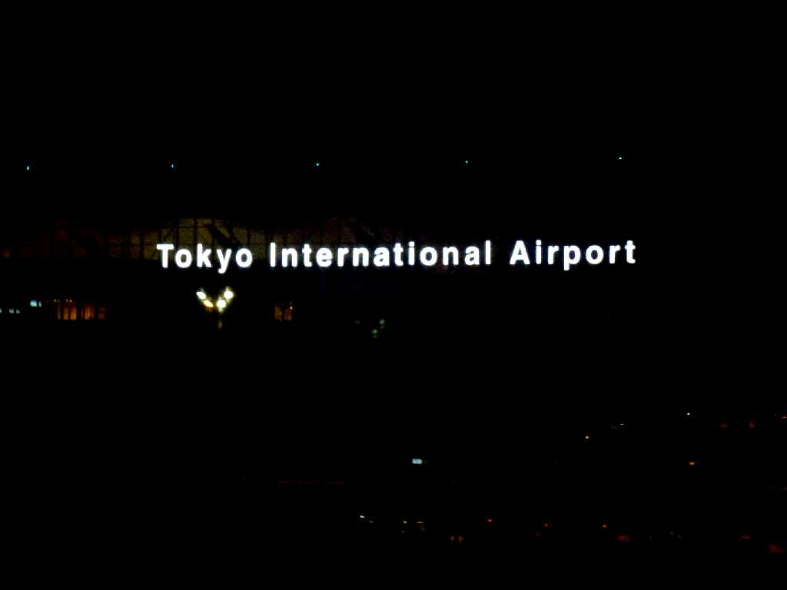

September 11 2013 Arrival in Haneda international airport Around the world in 80 days by railways
Japan Airlines JL1 B787 September 10 19:30 San Francisco to September 11 22:20 Haneda
８０日間世界一周鉄道の旅で８０日目 ユーラシア大陸約１４,０００㎞と北米大陸約６,０００㎞の約２０,０００㎞鉄道の旅を終えサンフランシスコから学生時代は航続距離が短くハワイ経由で 更に東京台風襲来でアメリカ軍基地ウェーク島で給油したJAL1便で羽田国際空港に予定通り帰国 一人旅で５㎏痩せました